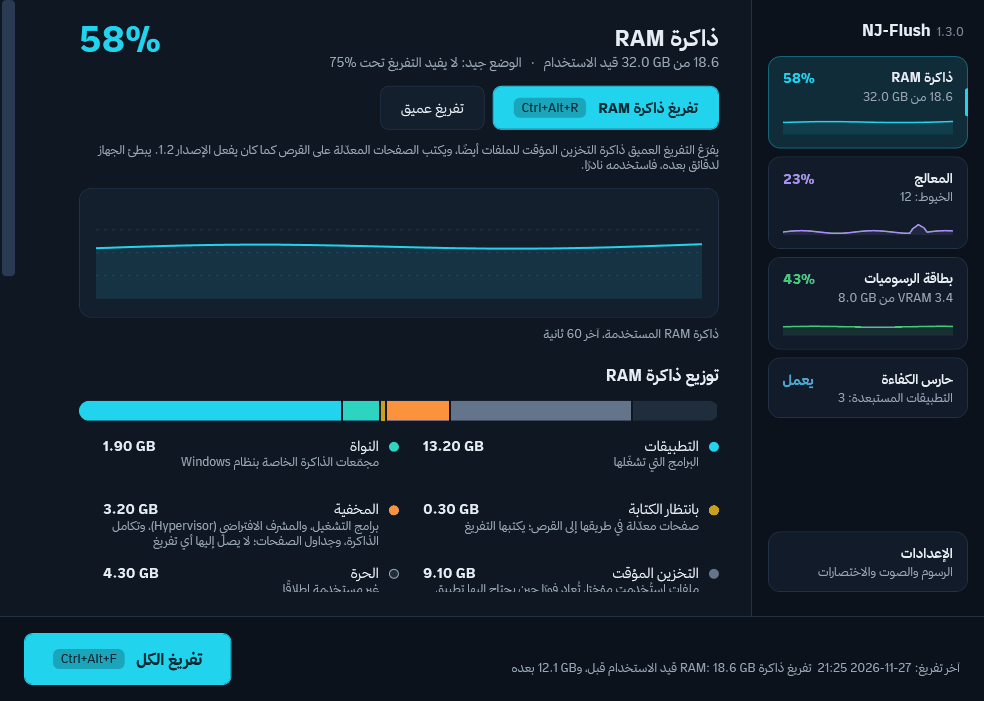
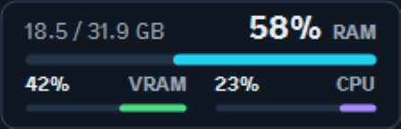
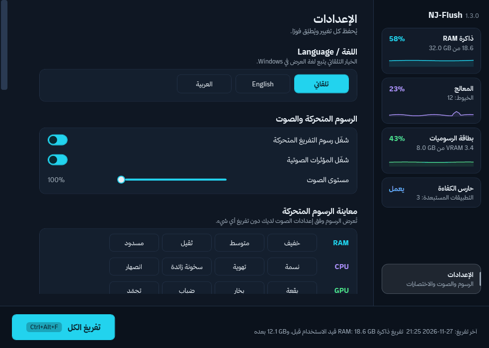

مجاني ومفتوح المصدر برخصة MIT، ملف واحد دون مثبّت. غير موقّع رقميًا بعد، وتجد ملاحظة SmartScreen أدناه.
التفريغ
أربعة أنواع من التفريغ، ولكلٍّ رسمه المتحرك.
لكل نوع مشهده وصوته على الشاشة، بأربع صيغ تناسب حجم المشكلة.
ذاكرة RAMمرحاض
يقلّص التطبيقات الخاملة في الخلفية، ويتخلص من التخزين المؤقت منخفض الأولوية، ويوقف العمليات المساعدة المتبقية. وكلما امتلأت الذاكرة اشتد التفريغ.
خفيفمتوسطثقيلمسدود
تُختار الصيغة بحسب نسبة ذاكرة RAM المستخدمة.
الاختصار: CtrlAltR
المعالجمروحة شفط
يضع في وضع الكفاءة التطبيقات التي شغلت نواة كاملة من المعالج لدقيقة كاملة، ولا يمسّ التطبيق الذي تستخدمه. وزر «استعادة» يلغي ذلك.
نسمةتهويةسخونة زائدةانصهار
تُختار الصيغة بحسب حمل المعالج أو عدد التطبيقات المشغولة.
الاختصار: CtrlAltC
بطاقة الرسومياتمرآة
يعيد تشغيل بطاقة الرسوميات. تبقى الشاشة سوداء لبضع ثوانٍ، وقد تُغلق التطبيقات التي تستخدم CUDA.
بقعةبخارضبابتجمّد
تُختار الصيغة بحسب ذاكرة الرسوميات المستخدمة.
الاختصار: CtrlAltG
الكلدش
بطاقة الرسوميات عند الحاجة، ثم المعالج، ثم ذاكرة RAM. وتظهر علامة صغيرة عند انتهاء كل جزء.
شطفدشفركفيضان
تُختار الصيغة بحسب أسوأ الأجزاء الثلاثة.
الاختصار: CtrlAltF
ذاكرة RAM: كلما امتلأت اشتد التفريغ.
يُختار مشهد ذاكرة RAM بحسب نسبة الذاكرة المستخدمة وقت التفريغ.
0%75%90%96%
أقل من 80%
تفريغ خفيف
ضغطة واحدة وتصريف نصف المياه.
من 80 إلى 89%
تفريغ متوسط
دوامة كاملة تنزل بالمياه كلها.
من 90 إلى 95%
تفريغ ثقيل
مياه معكّرة وضغطتان، ويهتز الحوض وتتناثر المياه.
96% فأكثر
مسدود
ترتفع المياه وتفشل الضغطة، فيدخل المكبس ثلاث مرات ثم تنفجر السدّة.
تحت 75% من ذاكرة RAM المستخدمة (الإعدادات، «ابدأ تفريغ ذاكرة RAM عند») لا يفعل التفريغ شيئًا ويخبرك بذلك.
لطيف افتراضيًا
يفرّغ التخزين المؤقت لذاكرة RAM بلطف.
كان الإصدار 1.2 يفرّغ ذاكرة كل التطبيقات دفعة واحدة، وعلى الأجهزة ذات القرص البطيء تحوّل ذلك إلى تجمّد. أما تفريغ ذاكرة RAM في الإصدار 1.3 فلطيف.
لا يفعل شيئًا تحت 75%
تحت 75% من ذاكرة RAM المستخدمة لا يفعل التفريغ شيئًا ويخبرك بذلك. فالتخزين المؤقت الذي كان سيتخلص منه هو ذاكرة حرة أصلًا، والتخلص منه يُبطئ الدقائق التالية. ويمكنك تغيير هذه النسبة من الإعدادات.
يقلّص تطبيقًا بعد تطبيق
تُقلَّص التطبيقات الخاملة في الخلفية واحدًا بعد الآخر (أقل من 2% من نواة، و64 MB أو أكثر، ولا يشمل التطبيق الأمامي ولا المستكشف ولا عمليات Windows نفسها)، ثم يُسقَط التخزين المؤقت منخفض الأولوية.
التفريغ العميق عند الطلب
ما زال تفريغ الإصدار 1.2 في صفحة ذاكرة RAM باسم «تفريغ عميق». يفرّغ مجموعات العمل كلها، ويكتب الصفحات المعدّلة على القرص، ويفرّغ قائمة الاستعداد (standby) كاملة. يُبطئ الجهاز لدقائق بعده، فاستخدمه نادرًا.
الجهاز نفسه والتطبيقات المفتوحة نفسها، بعد 60 ثانية من التفريغ.
تفريغ 1.2.5
تفريغ 1.3
الصفحات المقروءة من القرص في الثانية (الوسيط)
4,130
139
الصفحات المقروءة من القرص في الثانية (الذروة)
50,623
3,993
العودة إلى المستوى المعتاد (وسيطه 247)
لم تعد خلال 60 ثانية
فورًا
قائمة الصفحات المعدّلة (الذروة)
4,474 MB
948 MB
طابور القرص الصلب البطيء (الذروة)
5
1
إنهاء مستكشف الملفات (حدث Winlogon رقم 1002)
نعم
لا
أبطأ تشغيل لبرنامج Notepad
296 ms
276 ms
جهاز واحد وتشغيل واحد لكل إصدار، فهي مقارنة بين الأحمال وليست إعادة لحالة التجمّد. وقد سبق تشغيل 1.2.5 تفريغٌ آخر أفرغ جزءًا من التخزين المؤقت، وشُغّل تفريغ 1.3 بالقوة عند 32% من الذاكرة؛ وفي الاستخدام العادي لا يفعل 1.3 شيئًا تحت 75%. وبقي كل تشغيل لبرنامج Notepad دون 1.5 ثانية في الحالتين. الملاحظات الكاملة (بالإنجليزية).
اللوحة
لوحة تعمل كمدير المهام.
انقر مرتين على NJ-Flush.exe أو على الودجت أو على الأيقونة المخفية، أو اضغط CtrlAltP. بطاقة لكل جزء على الجانب، والصفحة المختارة بجوارها، والإعدادات في الأسفل.

ذاكرة RAM: رسم بياني لآخر 60 ثانية، والتطبيقات الأكثر استخدامًا للذاكرة، وتوزيع الذاكرة، وزرّا «تفريغ ذاكرة RAM» و«تفريغ عميق».
المعالج وبطاقة الرسومياتلكل منهما صفحته: الحمل، والتطبيقات الأكثر استخدامًا، وزر «تهدئة» أو «استعادة» لكل تطبيق في صفحة المعالج.
تفريغ الكل في كل صفحةيبقى زر «تفريغ الكل» واختصاره في الشريط السفلي مهما كانت الصفحة.
لا شيء يتحرك تحت مؤشركلا تتجدد القوائم تحت المؤشر، فلا ينتقل الزر من مكانه وأنت تصوّب عليه.
حارس الكفاءة
يُبقي متصفحك سريعًا حين تعود إليه.
يضع Windows 11 التطبيقات التي يظنها في الخلفية في وضع الكفاءة: أقل أولوية ونوى بطيئة. عندها تتقطّع المتصفحات والمحررات وتتأخر في التحميل عند العودة إليها.
يُبقي التطبيقات المدرجة في قائمته خارج وضع الكفاءة، ويراجعها كل 3 ثوانٍ. والمتصفحات مدرجة افتراضيًا.
دون صلاحيات المسؤول، ودون خدمة أو برنامج تشغيل، وبأقل استهلاك للمعالج.
تعرض صفحة «حارس الكفاءة» ما أبطأه Windows الآن، وتضيف أي تطبيق بنقرة واحدة.
يتوقف مؤقتًا حين يعمل الجهاز على البطارية لأن وضع الكفاءة يوفّر الطاقة (إعداد يمكن تغييره).
لقطة الشاشة بالواجهة الإنجليزية.
الودجت
ودجت صغير فوق الساعة.
يعرض ذاكرة RAM المستخدمة بشريط بلون التفريغ الذي سيُعرض، وشريطين رفيعين للمعالج وذاكرة الرسوميات (VRAM). يخفت حتى تمرّر المؤشر عليه، فيعرض عندها الذاكرة الحرة وذاكرة الرسوميات وآخر تفريغ.
اسحبه إلى أي مكان؛ يبقى فيه بعد إعادة التشغيل والتفريغ. وانقر عليه مرتين لفتح اللوحة.
وللأداة أيضًا أيقونة في الأيقونات المخفية (السهم ^ بجوار الساعة): النقر الأيسر يفتح اللوحة، والنقر الأيمن يعرض القائمة.
74%11.73/15.85 GB
CPU41%
VRAM26%

الاختصارات، ويمكنك تغييرها
تفريغ الكل
CtrlAltF
تفريغ ذاكرة RAM
CtrlAltR
تهدئة المعالج
CtrlAltC
إعادة تشغيل بطاقة الرسوميات
CtrlAltG
فتح اللوحة
CtrlAltP
انقر على الاختصار في الإعدادات ثم اضغط المفاتيح الجديدة؛ ويحذفه الزر ×. ويظهر الاختصار الذي يستخدمه تطبيق آخر باللون الأحمر.
العربية
التطبيق كله بالعربية.
اللوحة والودجت والقوائم والرسائل كلها تُقرأ من اليمين إلى اليسار. واختر من الإعدادات، «اللغة»: English أو العربية أو تلقائي، وهو يتبع لغة العرض في Windows.

الإعدادات، بالعربية.الودجت.
التنزيل
تنزيل واحد وموافقة مسؤول واحدة.
1
نزّل
احصل على NJ-Flush.exe من أحدث إصدار. ملف واحد دون مثبّت.
2
وافق مرة واحدة
يطلب التشغيل الأول موافقة المسؤول مرة واحدة. ينسخ NJ-Flush نفسه إلى %LOCALAPPDATA%\NJ-Flush ويسجّل مهمة مجدولة تعمل بالصلاحيات التي يحتاجها التفريغ.
3
افتح اللوحة
بعدها تفتح النقرة المزدوجة اللوحة، ويعمل كل تفريغ دون أي رسالة.
قد يظهر تحذير SmartScreen عند أول تشغيل
الملف غير موقّع رقميًا بعد. اختر «مزيد من المعلومات» ثم «تشغيل على أي حال».
يعمل على Windows 10 و11. يخبرك NJ-Flush حين يصدر إصدار جديد ويحدّث نفسه بنقرة واحدة بعد التحقق من SHA-256. ويمكنك إزالته في أي وقت من قائمة الودجت.
حدود التفريغ: الذاكرة التي تحجزها برامج التشغيل والمشرف الافتراضي (Hypervisor) وتكامل الذاكرة وجداول الصفحات لا يصل إليها أي تفريغ. ويعرض لك «توزيع ذاكرة RAM» مقدارها.
خيار «أعد تشغيل مستكشف الملفات عند التفريغ» متوقف افتراضيًا منذ الإصدار 1.3. وإن فعّلته فقد تتبعثر أيقونات سطح المكتب؛ وأداة NJ-Sort المرافقة تُبقي أيقونات سطح المكتب في أماكنها وتعيدها بعد أن يعيد NJ-Flush تشغيل المستكشف.